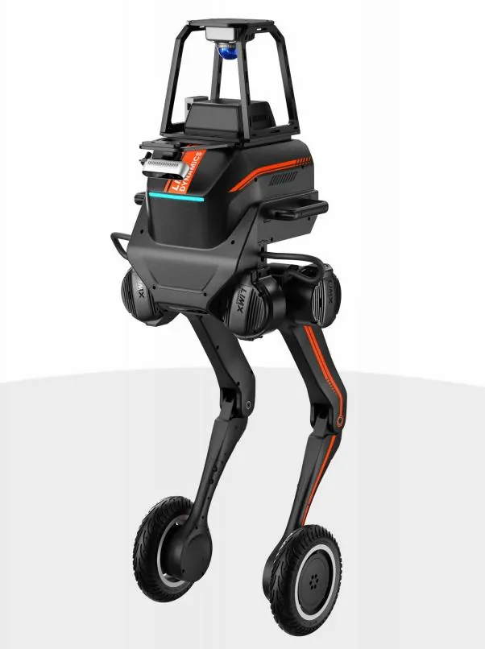

UMANOIDI · LIMX DYNAMICS
LimX TRON 1 EDU è un robot bipede multi-modale: lo stesso corpo si usa con piede puntiforme, suola o ruote, e si programma in Python con SDK e interfacce hardware aperti. Abra Robotics lo consegna in Italia con configurazione, formazione e assistenza.
Scheda tecnica
Applicazioni
Il piede modulare e l'SDK aperto permettono di addestrare politiche di locomozione in simulazione e portarle sul robot fisico in più configurazioni.
Si programma in Python e si cambia modalità in pochi passaggi, quindi lo stesso robot serve a corsi su bipedi, robot su ruote e controllo del movimento.
Aggiungendo il braccio a 6 DoF si studiano pianificazione del movimento e controllo del corpo intero su una base mobile compatta.
Con i kit sensori e voce la piattaforma gestisce mappatura, navigazione e interazione vocale, utili per laboratori di navigazione e per percorsi espositivi guidati.
TRON 1 non è un umanoide: non ha braccia né mani (se non con il kit braccio) ed è una piattaforma per la ricerca sulla locomozione. Se cerchi un umanoide con arti superiori guarda Unitree G1 o R1; se cerchi un quadrupede, Go2.
Domande frequenti
Il prezzo è su richiesta, perché dipende dai kit di espansione scelti (braccio, sensori, voce). Il preventivo arriva in 24 ore lavorative.
Il robot con piede puntiforme, i kit suola e ruote, batteria, telecomando, base di ricarica, set di chiavi esagonali, accessori, valigia flight case e licenza EDU.
Il produttore indica circa 1 settimana di consegna, a cui si aggiunge la spedizione in Italia. Abra gestisce consegna, configurazione, formazione e assistenza.
Il produttore dichiara circa 2 ore di autonomia. La batteria si cambia rapidamente e si ricarica in circa 1 ora dal 20 all'80%, in 1,5 ore al 100% con il dock.
La conformità per l'uso previsto si verifica con Abra prima dell'ordine: dicci l'applicazione e il luogo di impiego e te la confermiamo per iscritto.
Tre: piede puntiforme, suola per camminare in forma umanoide, ruote per spostarsi su terreni vari. Il piede si cambia rapidamente e il software riconosce l'hardware in automatico.
Contatti
Rispondiamo entro 24 ore lavorative con prezzo, tempi di consegna in Italia e configurazione consigliata.